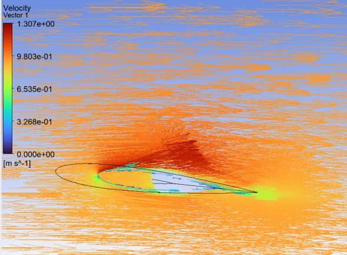
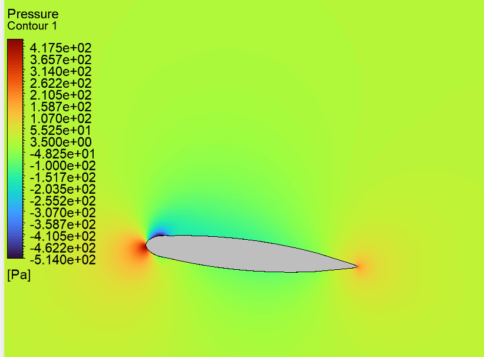
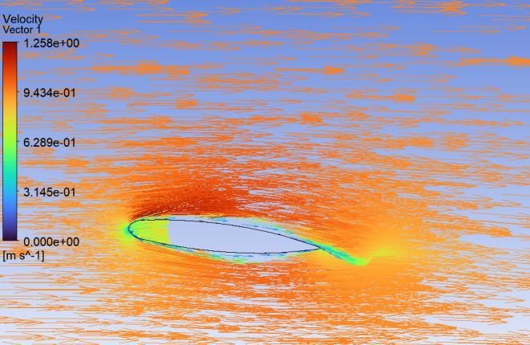

Bio-Inspired Hydrofoil Turbine Blade: CFD Design and Wind Tunnel Check
Summary
What
Hydrofoil turbine blade started from a ChatGPT concept based on fish fins and manta rays, refined through iterative ANSYS CFX runs and checked qualitatively in a wind tunnel.
Role
Refined a ChatGPT-generated bio-inspired concept through iterative ANSYS CFX runs and checked 3D printed prototypes in a wind tunnel, as co-author in a team of 7.
Results
- Refined blade reached L/D 13.1 against 8.27 for the starting design at 6 degrees and 10.6 m/s, 58 percent higher.
- Mesh independence study with 0.1, 0.05 and 0.025 m elements gave under 3 percent change between the last two.
- Wind tunnel tests on 3D printed prototypes differed from CFD by 30.5 and 46.11 percent, so they support trends only.

Problem
Hydrokinetic turbine blades must work in tidal, river and ocean currents that differ widely in speed. Using Reynolds number similarity at a fixed 0.17 m chord, the study compares a ChatGPT-generated bio-inspired hydrofoil with a version refined through CFD, with lift to drag ratio (L/D) as the main measure.
Method
- Generated the concept geometry with ChatGPT from fish fin and manta ray inspiration and rebuilt it in CAD. No custom AI training was done.
- Changed the geometry manually in ANSYS CFX, guided by L/D, until further changes gave no significant improvement. The chord stayed at 0.17 m.
- Steady-state CFD with the SST k-omega turbulence model. Boundaries: velocity inlet, static pressure outlet, no-slip foil surface and symmetry outer boundaries. RMS residuals below 1e-5.
- Reynolds-matched inlet velocities: 0.94 m/s for river (Re about 1.6e5), 8.2 m/s for tidal (Re about 1.4e6) and 10.6 m/s for ocean (Re about 1.8e6).
- Angles of attack of 0, 6 and 10 degrees, with 6 degrees as the representative value for all three applications.
- Mesh independence with element sizes of 0.1, 0.05 and 0.025 m. The 0.05 m size was used, with extra refinement near the foil surface.
- Plotted L/D against inlet velocity and against angle of attack for both designs, and compared pressure and velocity contours for the riverine case.
- Ran wind tunnel tests on 3D printed prototypes as a preliminary qualitative check.
Results
At 6 degrees the refined foil reaches L/D of 9.5 at 0.94 m/s, 8.1 at 8.2 m/s and 13.1 at 10.6 m/s, against 6.55, 5.85 and 8.27 for the starting design. At 10 degrees the refined L/D rises from 8.2 to 9.5 across the velocities and the starting design from 6.35 to 7.22. At 0 degrees L/D is small for both designs. Pressure and velocity contours show lower pressure above the refined foil, consistent with its higher lift.






Validation
Wind tunnel tests on 3D printed prototypes differed from CFD by 30.5 and 46.11 percent, which the authors treat as preliminary qualitative support because the trends are consistent.
Limitations
- Qualitative agreement only between the wind tunnel and CFD. The prototype had fractured and been repaired with adhesive, was glued into the tunnel without a mounting fixture and had rough printed surfaces.
- Steady-state CFD of a single hydrofoil section, and no full rotating turbine.
- Mesh independence only. Formal uncertainty quantification such as GCI is future work.
- The starting geometry came from ChatGPT and the refinement was manual and iterative.
- The paper is accepted and awaiting publication.
Tools
- ANSYS CFX
- SST k-omega
- CAD
- 3D printing
- Wind tunnel